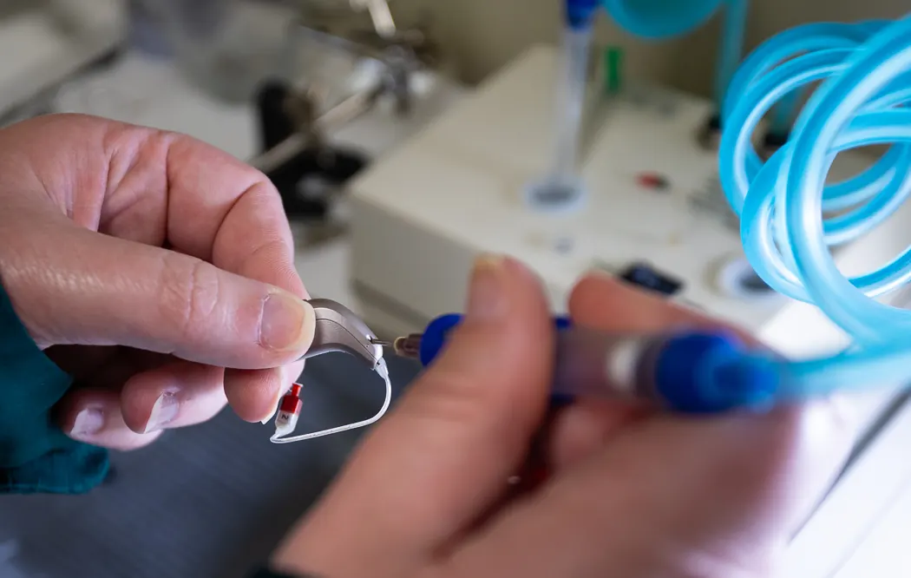

Services listed on Carolina Audiology's current website are testing, evaluation, fitting, smartphone linked hearing aids and VNG dizziness testing. Others below come from Dr. Palmer's published bio and her Clayton practice, and are marked until you confirm them for Rocky Mount.
Hearing testing and evaluation
Hearing tests for children and adults, with your results explained in plain language. More about hearing tests.
Hearing aid fitting
Hearing aids matched to your hearing, your routine and your budget, including smartphone linked models, with follow up visits to fine tune them. More about hearing aids.
VNG dizziness testing
Videonystagmography, or VNG, records your eye movements while you follow lights and change position. It shows how your inner ear and eyes work together for balance, and helps you and your doctor understand dizziness.
Tinnitus evaluation and Tinnitus Retraining Therapy
As a certified provider of Tinnitus Retraining Therapy (TRT), she helps individuals manage and find relief from persistent ringing in the ears. More about tinnitus care. to confirm for Rocky Mount
Hearing aid cleaning and repair
Clean and checks, adjustments and help with manufacturer repairs. to confirm for Rocky Mount

Earwax management
A look in your ear canal and gentle removal when wax is blocking it. to confirm for Rocky Mount
Auditory processing evaluations
Testing for children and adults who hear sounds but struggle to make sense of speech, especially in noise. to confirm for Rocky Mount
Cochlear implant evaluations
For people whose hearing aids are no longer enough. to confirm for Rocky Mount
Custom hearing protection
Ear protection shaped to your ears for hunting, music, swimming and loud work. to confirm for Rocky Mount